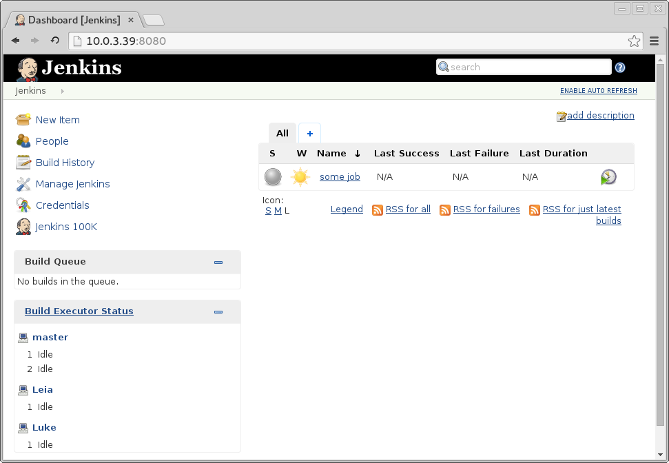

Серія статей про Docker та Jenkins:
- Використання Docker-контейнерів як Jenkins-нод (2013-10-31)
- Docker Jenkins Slave Generator (2014-09-02)
- Кешування локального репозиторію Maven у Docker (2015-03-13)
- Новий CentOS 7 Maven Slave у docker-jenkins-slave (2015-03-13)
- Docker-Jenkins-Slave 2.0 (DJS2) (2015-03-22)
Мені часто доводиться збирати RPM або тестувати свій код на різних операційних системах з різним оточенням, версіями бібліотек тощо. На робочій машині я використовую Arch Linux, але робота вимагає писати софт для RHEL/CentOS. Зручно використовувати білд-боти на зразок Jenkins для автоматизації цих збірок після кожного коміту.

Встановлення Jenkins на робочу систему та використання Docker як слейвів — зручна річ, але може засмічувати комп’ютер тимчасовими файлами, які важко вичищати. DJS2 пропонує ізольоване середовище (LXC-контейнер), де виконується і сам Jenkins, і всі його Docker-слейви, а на вашому комп’ютері зберігається лише папка з даними та джобами Jenkins.
Отже, якщо вам потрібно тестувати або збирати код під різні Linux-дистрибутиви, з DJS2 потрібна лише хостова Linux-машина з підтримкою LXC та Vagrant.
Репозиторій проєкту: https://github.com/rrader/docker-jenkins-slave
Нова версія DJS уже на GitHub. Вона в бета-версії та ще не повністю протестована, але на моєму комп’ютері працює. Спробуйте на своєму ПК та надсилайте відгуки — буду дуже радий будь-якому фідбеку, як про помилки, так і про успішні запуски.

Розгорнути Vagrant зі слейвами під різні ОС на локальній машині дуже просто. Зараз доступні CentOS 6 та CentOS 7, але поступово всі підтримувані ОС будуть перенесені (CentOS 5, Suse, Debian).
Pull-Request’и дуже вітаються :)
Нижче наведено фрагмент README з інструкцією, як запустити зв’язку Jenkins + Docker + LXC на вашому комп’ютері.
Системні вимоги
- Vagrant
Опціонально (але дуже рекомендовано):
- плагін vagrant-lxc:
vagrant plugin install vagrant-lxc - налаштування vagrant-lxc на хості (див. https://github.com/fgrehm/vagrant-lxc/wiki)
Швидкий старт
$ git clone git@github.com:rrader/docker-jenkins-slave.git djs
$ cd djs
$ ./djs.sh up
[lots of vagrant output ....]
==================================================
Jenkins should be available on 10.0.3.74:8080
Start using slaves with adding one
e.g. # ./djs.sh add centos7-java Luke
Тепер щойно розгорнутий Jenkins має бути доступний на http://10.0.3.74:8080 або подібній IP.
Тепер додамо слейви за допомогою ./djs.sh add <image> <name>:
$ ./djs.sh add centos7-java Luke
Unable to find image 'antigluk/jenkins-slave-centos6-java' locally
Pulling repository antigluk/jenkins-slave-centos6-java
[lots of docker output ....]
Status: Downloaded newer image for
antigluk/jenkins-slave-centos6-java:latest
507e2a18674253d0d7d1f5201ee963681704c2d18310af619f9fcbb0124efaf3
Connection to 10.0.3.74 closed.
Це завантажить образ centos7-java з Docker Hub і запустить його. Після завершення команди воркер «Luke» з’явиться в секції «Build Executor Status» у Jenkins.
Важливі примітки
Для використання з Vagrant Jenkins зараз готові лише centos6-java та centos7-java.
Посилання
Репозиторій DJS: https://github.com/rrader/docker-jenkins-slave
Цей пост перенесено зі старого блогу antigluk.blogspot.com.